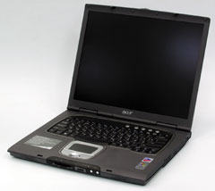

Олег Денисов, Сергей Назаров
В прошлом номере "BYTE/Россия" на суд читателей были представлены результаты тестирования стационарных ноутбуков класса "Замена настольного ПК" и подробно описаны основные тенденции развития процессоров и других подсистем современных переносных ПК. В этом номере начатую тему продолжает публикация материалов по итогам испытаний экономических моделей и бизнес-ноутбуков.
Напомним, что если для стационарных систем важнее всего производительность, большой экран (как правило, с диагональю 16-17 дюйм) и богатая функциональность - за что, конечно, приходится расплачиваться значительной массой (около 4 кг), малым временем работы от батареи (в среднем - 1,5 ч) и высокой ценой (порядка 2500 долл.), - то экономичные ноутбуки можно охарактеризовать в первую очередь как недорогие системы (по условиям тестирования цена этих моделей не должна была превышать 1300 долл.) с низкой производительностью, небольшой продолжительностью работы от батареи (около 2 ч) и довольно приличной массой (более 3 кг), а бизнес-ноутбуки - как системы с повышенной мобильностью (работа в автономном режиме - свыше 4 ч, небольшая масса - около 2,5 кг), довольно высокой скоростью работы и хорошей функциональностью.
Все представленные на испытания ноутбуки тестировались с помощью пакетов Multimedia Content Creation Winstone 2003 1.0, Business Winstone 2002 1.0.1, MadOnion 3DMark2001 SE Build 330, SiSoft Sandra Standard 2003.7.9.73, Business Winstone 2002 BatteryMark 1.0 (более подробно методика тестирования изложена в первой части публикации). Характеристики протестированных моделей и подробные результаты тестирования приведены в таблицах.
Экономический класс
ASUS A2500H

Переносные системы с настольными процессорами давно перестали быть редкостью. Но если сначала такие процессоры применялись в моделях класса "Замена настольного ПК", то сегодня их все чаще можно обнаружить в экономичных ноутбуках (последние, правда, оснащаются процессорами начального и среднего уровня, тогда как первые - самыми мощными).
Применение более дешевых, чем мобильные, настольных процессоров позволяет заметно снизить стоимость ноутбука и при одинаковом уровне цен получить выигрыш в быстродействии и функциональности системы. За это, однако, приходится расплачиваться меньшим временем работы от батареи и большей массой, поскольку настольные процессоры значительно "прожорливее" мобильных и требуют более эффективного охлаждения.
Протестированный ноутбук ASUS A2500H - классическая экономичная модель на базе настольного процессора среднего класса Pentium 4 2,66 ГГц с 533-МГц системной шиной и высоким энергопотреблением (в среднем 66 Вт) - со всеми вытекающими отсюда последствиями. Например, если взять конкурировавшую с A2500H модель RoverBook Nautilus E415W на "истинно" мобильном Pentium M 1,40 ГГц (типичная потребляемая мощность 22 Вт) и приблизительно уравнять их в цене (согласно заявленным данным, стоимость A2500H - 1290 долл., Nautilus E415W - 1195 долл.), уменьшив у модели ASUSTeK объем ОЗУ до 256 Мбайт и исключив накопитель для флэш-карт, то в итоге A2500H обеспечит лучшую производительность, значительно проигрывая при этом по времени автономной работы и массе - соответственно 1 ч 55 мин против 4 ч 45 мин и 3,2 кг против 2,73 кг.
Интересно также отметить, что в тестах на скорость работы процессора и системной памяти A2500H заметно уступал ноутбуку Bliss 5055, несмотря на одинаковые процессор и режим работы ОЗУ - одноканальный DDR266. Причина, скорее всего, заключается в неэффективной работе северного моста НМС системной платы SiSM650, "тормозящего" системную шину и шину памяти. Однако в интегральных тестах Business Winstone и CC Winstone A2500H обогнал Bliss 5055 и по скорости работы с наиболее популярными офисными и мультимедиа-программами был, пожалуй, лучшим в своем классе, заняв соответственно 2-е и 1-е места.
Что же касается быстродействия графической подсистемы, то в тесте 3DMark2001 результативность A2500H была более чем скромной - последнее место (следствие встроенного в НМС маломощного графического ядра SiS Real256 Graphics). Так что для запуска современных игр A2500H, очевидно, не годится.
Нам очень понравилась хорошо продуманная конструкция этой модели. Прежде всего A2500H оборудован фирменной кнопкой Power Gear - включает/выключает специальный режим экономии энергии с пониженной скоростью работы процессора и яркостью экрана, что особенно важно для системы с настольным процессором без встроенных средств энергосбережения. В арсенале A2500H также целых пять USB-портов (причем к трем из них очень легко подобраться - они вынесены на правую панель), удобно расположенный ИК-порт на правой и порт IEEE 1394 - на левой панели, параллельный порт (для подключения старых принтеров и "секретных" ключей с параллельным интерфейсом), порт линейного входа (современные ноутбуки крайне редко оснащаются этим разъемом) и встроенный накопитель для флэш-карт MMC/SD/MS/MS Pro. Имеются также блок кнопок для автономного проигрывания аудиодисков (позволяют проигрывать аудиодиски без загрузки ОС и управлять системным программным аудиопроигрывателем при работе в среде ОС); размещенные на передней панели и хорошо заметные при закрытой крышке ноутбука четыре индикатора (режима питания, заряда батареи, работы модуля беспроводной связи и получения электронной почты - последний рассчитан на работу только с ПО от Microsoft); отключающая ЖК-дисплей горячая комбинация клавиш Fn + F7 (принудительное "гашение" ЖК-экрана предусмотрено далеко не у всех ноутбуков). В остальном возможности функциональных комбинаций клавиш стандартны - включение режима ожидания, включение/выключение модуля беспроводной связи и динамиков, переключение вывода изображения (ЖК-дисплей, внешний VGA-монитор, ЖК-дисплей плюс VGA-монитор, ТВ-приемник) и управление громкостью звука и яркостью ЖК-дисплея. Две фиксирующие защелки на крышке ноутбука надежно "удерживают" последнюю при транспортировке (в некоторых моделях крышка прижимается только одной защелкой). В то же время ноутбук не оборудован звуковым S/PDIF-выходом, портом PS/2 и, что еще важнее, последовательным портом.
A2500H очень легко модернизировать. На левой панели ноутбука расположен отсек с жестким диском, на правой - отсек со съемным оптическим накопителем* (кстати, тестировавшийся экземпляр был оборудован довольно дорогим комбинированным накопителем DVD-ROM/CD-RW, но в целях экономии можно приобрести модификацию с накопителем DVD-ROM). На нижней панели находится отсек с процессором и разъемом для одного модуля памяти - последнее обстоятельство неизбежно приведет к повышенным затратам при наращивании ОЗУ, поскольку придется заменять установленный модуль памяти. Кроме того, A2500H может быть дополнительно оборудован Wi-Fi-модулем беспроводной связи стандарта 802.11b.
*Здесь и далее под "съемным" понимается устройство, замена которого требует времени (например, крепящийся винтами оптический накопитель или жесткий диск), под "сменным" - практически моментально заменяемое устройство (фиксирующийся защелкой оптический накопитель, модуль с жестким диском или второй батареей).
Клавиатура A2500H собрана из полупрозрачных черно-синих клавиш - смотрятся они весьма эффектно - с отлично различаемыми англо- и русскоязычными символами соответственно белого и светло-зеленого цвета. Клавиши верхнего и нижнего ряда и клавиши перемещения курсора (Home, Page Up, Page Down, End и клавиши-"стрелки") "урезаны", остальные клавиши полноразмерные - такое распределение клавиш по размеру на сегодня можно считать стандартом для ноутбуков. Клавиши Insert и Delete размещены в правом верхнем углу, Home, Page Up, Page Down, End - в крайнем правом ряду, блок клавиш-"стрелок" - в нижнем правом углу, смещен на один ряд вниз и отделен от остальных клавиш двумя пустыми позициями. Подчеркнем, что подобное расположение перечисленных клавиш очень удобно и на текущий момент фактически стало стандартом для переносных ПК. A2500H также оборудован двухрядной клавишей Enter и достаточно длинными клавишами Tab, Caps Lock, Backspace и правой Shift. Пожалуй, из недостатков можно назвать только несколько "укороченную" левую клавишу Shift и довольно мелкие клавиши верхнего ряда - в первую очередь это, конечно, касается часто используемых клавиш Insert и Delete.
Попутно также отметим весьма элегантный дизайн A2500H и такую приятную мелочь, как кармашек для визитки на нижней панели.
Помимо стандартного набора оборудования и ПО - собственно ноутбук, адаптер питания, драйверы и служебные программы - в комплект поставки A2500H включается подробное и качественное руководство пользователя на русском языке, видеопереходник S-Video - коаксиал, оптическая мышь, сумка для транспортировки ноутбука, модемный шнур и ОС Microsoft Windows XP Home Edition (RU).
Дополнительно можно приобрести внешний USB-флоппи-дисковод, внешний USB-флэш-накопитель 7-in-1 для карточек CF/Micordrive/SM/MMC/SD/MS/MS Pro, внешний USB-концентратор с четырьмя USB-портами, коммуникационный USB-кабель для сетевого соединения ноутбука с другим ПК, переходники USB-COM и USB-LPT, двухдиапазонный PC CardBus-адаптер беспроводной связи SpaceLink Cardbus Card стандарта 802.11a/b, внешний однодиапазонный USB-адаптер беспроводной связи стандарта 802.11b и адаптер питания от бортовой сети автомобиля/самолета.
Высокая скорость работы с офисными и мультимедиа-пакетами, широкие возможности подключения периферийных устройств, продуманная конструкция корпуса и удобная клавиатура - вот основные достоинства A2500H. Плюс к этому - специальная кнопка Power Gear для включения режима пониженного энергопотребления и горячая комбинация клавиш для отключения ЖК-дисплея, легкость модернизации, привлекательная цена и довольно длительный срок гарантии (два года на ноутбук и компоненты).
В итоге A2500H был признан победителем в классе экономических моделей и отмечен знаком "Выбор редакции BYTE/Россия". Несомненно, A2500H будет выгодным приобретением в качестве недорогого ноутбука, однако при его покупке следует помнить о "слабой" графической подсистеме, отсутствии порта PS/2, последовательного порта и звукового S/PDIF-выхода, приличной массе и весьма непродолжительной работе от батареи.
Bliss 5055
Bliss 5055 - еще один пример недорогого и довольно тяжелого (3,3 кг) переносного ПК на базе настольного процессора. Эта модель была заявлена на тестирование в экономическом классе, однако 5055 нельзя назвать типичным представителем ноутбуков начального уровня. Дело в том, что он был оборудован не только довольно быстрым процессором Pentium 4 2,66 ГГц с 533-МГц системной шиной, но и мощным графическим контроллером ATI Mobility Radeon M9-P с 64 Мбайт локальной DDR-видеопамяти и 15-дюйм ЖК-экраном с рабочим разрешением до 1400х1050 - как правило, такой видеоподсистемой сегодня оснащаются более дорогие бизнес-модели и настольные ноутбуки. Но поскольку цена экономических моделей жестко ограничивалась правилами тестирования - до 1300 долл., это заставило экономить на других подсистемах - протестированный экземпляр 5055 был оборудован "малолитражным" ОЗУ 256 Мбайт и жестким диском емкостью всего 20 Гбайт, а также недорогим оптическим накопителем CD-ROM (вместо него в этой модели может быть установлен накопитель DVD-ROM, CD-RW, DVD-ROM/CD-RW или DVD-RW).
Принятая на вооружение тактика усиления процессора и графической подсистемы 5055 в целом себя оправдала - ноутбук лидировал в тестах на скорость работы процессора, значительно обогнал соперников в графическом 3D-тесте 3DMark2001 и был вторым в тестах на скорость работы ОЗУ и в интегральном мультимедиа-тесте CC Winstone. Однако он показал довольно скромный результат в тесте Business Winstone на скорость работы с офисными приложениями - 3-е место.
Приятно также отметить, что среди трех протестированных экономичных моделей на настольных процессорах 5055 дольше всех "продержался" на батарее и занял в своем классе 2-е место по продолжительности автономной работы - 2 ч 31 мин.
Помимо этого к достоинствам 5055 следует отнести наличие полного (!) набора низкоскоростных периферийных портов (PS/2, параллельный, последовательный, ИК), S/PDIF-выхода, встроенного флоппи-дисковода, двух фиксирующих защелок на крышке ноутбука. Под экраном расположены три "сквозных" индикатора - режима питания; заряда и исправности батареи; совмещенный индикатор работы модулей беспроводной связи/получения электронной почты (кстати, средствами прилагаемого ПО Auto Mail Checker его можно "научить" различать обычные сообщения и сообщения от наиболее важных корреспондентов). Эти индикаторы видны как при открытой, так и при закрытой крышке ноутбука, поскольку выведены одновременно на внутреннюю и внешнюю панель последней. Имеются также переключатель для включения/выключения модулей беспроводной связи (на передней панели), горячая комбинация клавиш Fn + F12 для выбора работающего модуля беспроводной связи - Wi-Fi, Bluetooth или одновременно Wi-Fi и Bluetooth (модули беспроводной связи устанавливаются дополнительно, так что средства управления ими будут, конечно, работать только при их наличии) и горячая комбинация клавиш Fn + F7 для выключения ЖК-дисплея. Отметим и простоту модернизации - установленный накопитель CD-ROM можно заменить на другой оптический накопитель, на нижней панели размещен отсек с жестким диском и отсек с процессором и модулями памяти.
Расположение периферийных портов, однако, оставляет желать лучшего. ИК-порт размещен на передней панели, что крайне неудобно, - представьте, например, что вам нужно соединить 5055 по ИК-связи с мобильным телефоном или, еще хуже, с другим ноутбуком. Звуковые порты и IEEE 1394 расположены также на передней панели - подобное решение нельзя назвать удачным, поскольку соединительные провода от периферийных устройств будут неизбежно путаться под руками. Из трех USB-портов легко подобраться только к одному - он вынесен на левую панель (два других - на заднюю). При этом правая панель ноутбука абсолютно пустая!
Здесь же отметим, что 5055 не оборудован средствами автономного проигрывания аудиодисков, звуковым разъемом линейного входа и комбинацией клавиш для переключения вывода изображения - последнее выполняется только с помощью драйверов видеоподсистемы.
Расположение клавиш клавиатуры у 5055 стандартное и очень удобное - Insert и Delete размещены в верхнем правом углу, Home, Page Up, Page Down и End - в крайнем правом ряду, блок клавиш-"стрелок" - в нижнем правом углу, смещен на один ряд вниз и отделен от остальных клавиш двумя пустыми позициями. Клавиши Tab, Caps Lock, Backspace и правая Shift достаточно длинные, клавиша Enter - двухрядная. "Уменьшенные" клавиши верхнего и крайнего правого ряда и клавиши-"стрелки" довольно большие. Русско- и англоязычные символы легко различаются - они изображены соответственно белым и желтым цветом на черном фоне. Пожалуй, из недостатков здесь можно отметить только заметно "укороченную" левую клавишу Shift.
Среди "окружения" 5055 отметим печатное руководство пользователя на английском и русском языке, модемный шнур, сумку для транспортировки ноутбука, ОС Microsoft Windows XP Home Edition (RU) и программы InterVideo WinDVD 4 и Roxio Easy CD Creator 5 Basic. Из дополнительных аксессуаров - PS/2-разветвитель и адаптер питания от бортовой сети автомобиля/самолета. Кроме того, 5055 дополнительно может быть оснащен встроенной Web-камерой (она размещается вверху над ЖК-дисплеем и поставляется в комплекте с ПО Camtel от Camtel Technology - предназначено для организации WebCam-сервера и видеоконференций и позволяет делать моментальные снимки) и встроенными модулями беспроводной Wi-Fi- и Bluetooth-связи и ТВ-тюнера.
Неплохое быстродействие процессора и графической подсистемы в сочетании с грамотной конструкцией клавиатуры, полным набором низкоскоростных интерфейсов, простотой модернизации, довольно длительным сроком гарантии (два года на ноутбук и компоненты), очень приличным для такой системы временем автономной работы, возможностью дополнительной установки Web-камеры, модулей беспроводной связи и даже ТВ-тюнера и, конечно, низкой ценой позволяют смело рекомендовать Bliss 5055 в качестве экономичного и, что важно, универсального ноутбука.
Нелишне, однако, напомнить, что у этой модели неудобно расположены разъемы для подключения периферии и не предусмотрены средства проигрывания аудиодисков без загрузки ОС - впрочем, как показывает практика, ноутбуки достаточно редко используются как автономный аудиоцентр.
iRU Intro 2215
Ноутбук iRU Intro 2215 построен на базе настольного процессора начального уровня Intel Celeron 2,40 ГГц с 400-МГц системной шиной, и уже по этому признаку в нем можно безошибочно распознать недорогую, довольно тяжелую и с малым временем работы модель экономического класса (что, кстати, подтверждается заявленной ценой - 1250 долл., массой - 3,4 кг и типичным для подобных систем временем работы от батареи - 2 ч 07 мин), которую можно смело поставить в один ряд с двумя предыдущими моделями.
Последние, правда, были оборудованы более мощным процессором, так что Intro 2215 пришлось довольствоваться лишь 3-м местом в процессорных тестах. Но он "отыгрался" в тестах на скорость работы системной памяти и в графическом тесте 3DMark2001 - соответственно 1-е место благодаря самому быстрому среди экономичных моделей режиму работы ОЗУ (одноканальный DDR333) и 2-е - за счет довольно производительного графического контроллера Nvidia GeForce4 440 Go с 64 Мбайт локальной DDR-видеопамяти.
И все-таки медленная системная шина и небольшой 128-Кбайт L2-кэш процессора существенно замедлили работу ноутбука в интегральных тестах Business Winstone и CC Winstone, и даже скоростной жесткий диск (Seagate ST94011A на 5400 об./мин из новейшего семейства Momentus) не смог улучшить положение этой модели - Intro 2215 заметно проигрывал соперникам.
Помимо быстрой и довольно вместительной дисковой подсистемы к достоинствам Intro 2215 следует отнести 15-дюйм ЖК-экран (правда, с небольшим рабочим разрешением - до 1024х768), комбинированный накопитель DVD-ROM/CD-RW, наличие портов PS/2 и параллельного, S/PDIF-выхода, большое число портов USB и программируемых кнопок быстрого запуска приложений - по четыре штуки.
Среди оригинальных особенностей Intro 2215 прежде всего отметим исключительно грамотную конструкцию клавиатуры. "Окаймляющие" клавиши верхнего, крайнего правого, нижнего ряда и клавиши-"стрелки" расположены стандартно и очень удобно. Помимо этого, клавиши крайнего правого ряда (Home, Page Up, Page Down, End) полноразмерные - очень правильное решение (!), "уменьшенные" клавиши верхнего ряда и клавиши-"стрелки" достаточно велики. Клавиши Tab, Caps Lock, Backspace и обе клавиши Shift достаточно длинные, клавиша Enter - двухрядная. Добавлена вторая клавиша Windows Logo (применяется для быстрого запуска приложений в среде Windows), она размещена правее клавиши пробела. Четко различаются англо- и русскоязычные символы - изображены соответственно белым и желтым цветом на черном фоне. В итоге здесь Intro 2215 получил сплошные плюсы и ни одного минуса, так что работать с клавиатурой этого ноутбука - одно удовольствие!
Список реализованных в Intro 2215 оригинальных решений продолжают расположенная под экраном специальная кнопка включения режима энергосбережения и удобный колесный регулятор громкости на передней панели. Здесь же отметим возможность выключения/включения ЖК-панели и встраиваемого дополнительно Wi-Fi-модуля беспроводной связи горячими комбинациями клавиш, наличие под экраном трех "сквозных" индикаторов (зарядки батареи, питания от батареи и работы от внешней сети), возможность замены оптического накопителя и быстрой модернизации "спрятанных" в доступных снаружи отсеках жесткого диска и модулей памяти - они размещены соответственно на правой и нижней панели (к сожалению, для процессора подобного отсека не предусмотрено).
В то же время в конструкции Intro 2215 обнаружился ряд недостатков. Ноутбук не оборудован последовательным и ИК-портами, звуковым разъемом линейного входа, индикатором получения электронной почты и - что, пожалуй, важнее всего, - портом IEEE 1394 и клавишей прокрутки. USB-разъемы расположены нерационально - все четыре в правом углу на задней панели, хотя при желании разработчики могли распределить часть из них по боковым панелям. Неудобно размещены аудиоразъемы - на передней панели, так что звуковые кабели, скорее всего, будут мешать работать. Индикатор работы беспроводной сети находится на рабочей панели под экраном и, конечно, не будет виден при закрытой крышке ноутбука - последняя, кстати, фиксируется при транспортировке только одной защелкой.
Комплект поставки Intro 2215 подобран очень хорошо - подробное руководство пользователя на русском языке, краткий печатный каталог дополнительных аксессуаров, модемный шнур, видеопереходник S-Video - коаксиал, сумка для транспортировки ноутбука, оптическая USB-мини-мышь, ОС Microsoft Windows XP Home Edition (RU), программы CyberLink PowerDVD, Paragon System Recovery (к ней прилагается печатное руководство пользователя), Ahead Nero Burning Rom 5.5, Dr. Web и диск DVD-ROM с видеофильмом.
Среди множества дополнительных аксессуаров к Intro 2215 стоит отметить встраиваемый Wi-Fi-модуль беспроводной связи, внешний USB-флоппи-дисковод, внешний USB-контейнер для 2,5-дюйм жестких дисков, USB-мини-разветвитель с четырьмя USB-портами и числовую USB-клавиатуру.
Довольно большой 15-дюйм ЖК-экран, отлично спроектированная клавиатура, быстрый 40-Гбайт жесткий диск, комбинированный накопитель DVD-ROM/CD-RW, S/PDIF-выход, привлекательная цена, хорошая скорость работы с 3D-графикой и пусть невысокое, но вполне достаточное для среднестатистического пользователя быстродействие в наиболее популярных приложениях - все это позволяет охарактеризовать Intro 2215 как недорогой и удобный офисный ноутбук с усиленной видеоподсистемой, вполне достаточной для "освоения" современных компьютерных игр. И если вас не смущает отсутствие последовательного, IEEE 1394 и ИК-портов и клавиши прокрутки, то его приобретение в таком качестве будет выгодным решением. Следует, однако, обратить внимание, что у Intro 2215 небольшой срок гарантии - всего один год на ноутбук и компоненты.
RoverBook Nautilus E415W
Среди протестированных моделей экономического класса RoverBook Nautilus E415W оказался единственным ноутбуком, построенным на базе действительно мобильного процессора - Intel Pentium M 1,40 ГГц с типичной рассеиваемой мощностью 22 Вт, и, конечно, он с огромным преимуществом выиграл тест на продолжительность работы от батареи - 4 ч 45 мин!
При этом E415W был заметно легче соперников - 2,73 кг против 3,2-3,4 кг - и, что интересно, в интегральном офисном тесте Business Winstone обогнал двоих конкурентов на основе настольного процессора Pentium 4 2,66 ГГц с втрое (!) большим энергопотреблением, показав в нем лучший результат! Однако эта модель отстала по показателю CC Winstone - 3-е место - и продемонстрировала низкую результативность в процессорных тестах и тестах на скорость работы ОЗУ - последнее место. В графическом 3D-тесте 3DMark2001 быстродействие E415W оказалось также далеко не блестящим - 3-е место, однако в этом виноват не процессор, а слабый графический контроллер Intel Extreme Graphics 2 (встроенный в главный концентратор НМС Intel 855GM). Впрочем, для недорогих экономических ноутбуков прежде всего важна скорость работы с офисными приложениями, а здесь, как отмечалось, E415W был лучшим в своем классе.
Среди других достоинств E415W сразу же отметим специальную кнопку Turbo - отключает встроенные средства энергосбережения Intel SpeedStep и "заставляет" процессор всегда работать на полную мощность. Плюс к тому E415W оборудован быстрым и весьма вместительным 40-Гбайт жестким диском Hitachi DK23EB-40 на 5400 об./мин, комбинированным оптическим накопителем DVD-ROM/CD-RW, параллельным и PS/2-портами и четырьмя кнопками быстрого запуска приложений (запуск системной почтовой программы и Web-браузера и две программируемые кнопки) - они размещены на передней панели и, что удобно, могут быть отключены специальной кнопкой во избежание случайного нажатия во время работы или при транспортировке ноутбука. Оригинально выполнен индикатор режима питания (встроен в кнопку включения ноутбука), имеются также два индикатора "наружного наблюдения" (работы ноутбука в режиме ожидания и зарядки батареи), они размещены сзади на верхнем ребре правой панели и видны при закрытой крышке ноутбука. Наличие двух отдельных кнопок прокрутки (вверх и вниз), пожалуй, обеспечивает лучшую эргономику по сравнению с одной "двунаправленной" клавишей прокрутки; удобен и механический колесный регулятор громкости, вынесенный на переднюю панель. Сменный оптический накопитель (фиксируется защелкой на нижней панели) и размещенные на нижней панели отсеки с процессором, модулями памяти и жестким диском позволяют быстро модернизировать систему.
Следует отдельно подчеркнуть нетрадиционное и исключительно удобное расположение портов PS/2, USB, IEEE 1394, VGA и S-Video - все они размещены на боковых панелях. Причем три USB-порта разнесены (один - на левой, два - на правой панели), что следует признать очень грамотным решением - периферийные USB-устройства можно легко разместить как слева, так и справа от ноутбука.
Обращает на себя внимание отлично подобранная цветовая гамма клавиатуры - без кричащих, раздражающих оттенков ("окаймляющие" клавиши выкрашены в темно-серый цвет, "центральные" - в светло-серый; англоязычные символы изображены черным цветом, русскоязычные - темно-красным, специальные - фиолетово-синим), с прекрасной "читабельностью" всех символов и удобным цветовым разграничением рабочих зон. Расположение клавиш удобное и практически стандартное, за исключением, пожалуй, перемещенных из верхнего правого угла клавиш Insert и Delete (находятся справа от клавиши пробела). "Уменьшенные" клавиши верхнего, нижнего и правого ряда и клавиши-"стрелки" достаточно большие. Клавиши Tab, Caps Lock, Shift, Backspace достаточно длинные, клавиша Enter - двухрядная. В целом клавиатура производит очень приятное впечатление, и в ее конструкции обнаружился только один недостаток - отсутствие второй, правой клавиши Ctrl.
Нельзя также не отметить длительный срок гарантийного обслуживания E415W - три года на ноутбук и компоненты - и неплохой комплект поставки (печатное и электронное руководство пользователя на русском языке, модемный шнур, ОС Microsoft Windows XP Home Edition (RU) вместе с кратким печатным руководством и программы PROMT Express, PROMT Internet Clipboard Translator, InterVideo WinDVD, Roxio Easy CD Creator 5 Basic и "Антивирус Касперского" Lite). Дополнительно к этому можно приобрести внешний USB-флоппи-дисковод и встраиваемый Wi-Fi-модуль беспроводной связи.
У E415W обнаружилось и несколько недостатков. Ноутбук не оборудован последовательным и ИК-портами, звуковыми разъемами линейного входа и S/PDIF-выхода, индикаторами получения электронной почты и работы модуля беспроводной связи и средствами автономного проигрывания аудиодисков без загрузки ОС. Не предусмотрены горячие комбинации клавиш для включения/выключения ЖК-дисплея и беспроводной связи - в последнем случае эти функции могла бы выполнять специальная кнопка, однако она также отсутствует. Кроме того, звуковые разъемы микрофонного входа и линейного выхода расположены на передней панели, что все-таки не очень удобно.
Рекордная продолжительность работы от батареи, небольшая масса, высокая производительность в офисных приложениях, низкая цена и, что очень важно при работе в "полевых" условиях, эргономичная клавиатура и указательная сенсорная панель с двумя раздельными кнопками прокрутки в "связке" с нетрадиционным и очень удобным расположением периферийных портов - все это позволяет рекомендовать E415W для покупки в качестве недорогого дорожного ноутбука. Подчеркнем, однако, что его "коммуникабельность" несколько ограничена - E415W не комплектуется модулем беспроводной связи и ИК-портом.
Бизнес-класс
Acer TravelMate 661LC
Стильный дизайн, 15-дюйм ЖК-экран с рабочим разрешением до 1400х1050, комбинированный оптический накопитель DVD-ROM/CD-RW, встроенный накопитель для флэш-карт MMC/SD/SM/MS и Wi-Fi-модуль беспроводной связи стандарта 802.11b, порт IEEE 1394, универсальный отсек для сменных модулей с горячей заменой (по умолчанию в него устанавливается оптический накопитель, который можно заменить на другой оптический накопитель, второй жесткий диск или вторую батарею; модули фиксируются защелкой на задней панели) и разъем для подключения репликатора портов (поставляется дополнительно) красноречиво свидетельствуют о принадлежности Acer TravelMate 661LC к бизнес-ноутбукам.

"Класс" этой модели также подкрепляется наличием параллельного и ИК-портов, звукового линейного входа, клавиши прокрутки в четырех направлениях, кармашка для визитки на нижней панели, двух фиксирующих защелок на крышке ноутбука и расположенных на передней панели кнопок включения/выключения, большим числом кнопок быстрого запуска приложений (две для запуска системной почтовой программы и Web-браузера и две программируемые). На передней панели также находятся индикаторы работы беспроводных модулей Wi-Fi и Bluetooth (последний устанавливается дополнительно), режима работы и зарядки батареи - все индикаторы видны снаружи при закрытой крышке. Удобно расположены USB-порты, IEEE 1394 и звуковые разъемы - все выведены на левую панель. Есть возможность быстрой замены жесткого диска и модулей памяти - они размещены в доступных снаружи отсеках соответственно на левой и нижней панели (к сожалению, для процессора подобного отсека не предусмотрено). Плюс к этому три фирменные разработки Acer - подсистема "коллективной" безопасности на смарт-картах, расширенный набор горячих комбинаций клавиш и оригинальная клавиатура, - на которых стоит остановиться подробнее.
Ноутбук комплектуется программным комплексом PlatinumSecret, работающим в связке со смарт-картами - в 661LC есть встроенный накопитель для карт этого типа. В PlatinumSecret входят три программы: PlatinumPAS - для контроля доступа на аппаратном уровне до запуска POST-теста (если соответствующая смарт-карта не вставлена в накопитель, то система не будет инициализироваться и ноутбук не запустится), PlatinumSecure - контролирует доступ на уровне ОС и может шифровать/дешифровать файлы, PlatinumKey - позволяет хранить и считывать со смарт-карт пароли доступа к Web-ресурсам, требующим авторизации.
Помимо стандартных горячих комбинаций клавиш, обеспечивающих включение режима ожидания, переключение вывода изображения, отключение динамиков, управление яркостью экрана и громкостью и "гашение" ЖК-дисплея (последнее, кстати, реализовано далеко не во всех ноутбуках), 661LC оборудован дополнительными комбинациями для выключения указательного устройства (сенсорной панели TouchPad), быстрого вызова вкладок с системными настройками и настройками энергосбережения и даже для вывода на экран справочной информации о собственно функциональных комбинациях клавиш.
Наконец, клавиатура 661LC устроена весьма оригинально - выгнута полукругом вниз, так что ее клавиши "расходятся" под углом 5° по направлению к передней панели. На первый взгляд такое решение кажется весьма привлекательным, поскольку повышает эргономичность работы, однако, привыкнув к нестандартному ощущению полукруглой клавиатуры и бессознательно скорректировав для него моторику рук, пользователи вряд ли смогут потом работать с обычными "прямыми" клавиатурами так же свободно, как раньше. Из недостатков еще отметим маленький размер клавиш верхнего ряда (правда, они разделены довольно значительными просветами), однорядную клавишу Enter, совмещенные клавиши Home/Page Up и End/Page Down - кстати, они "втиснуты" непосредственно над блоком клавиш-"стрелок", поэтому последний не отделен от остальных клавиш - и, что крайне неудобно, изображение англо- и русскоязычных символов одним цветом - белым на черном фоне. В итоге клавиатура у 661LC выглядит, конечно, очень стильно, но работать с ней неудобно.
К недостаткам 661LC следует также отнести отсутствие последовательного и PS/2-порта, разъема S/PDIF-выхода, блока кнопок для автономного проигрывания аудиодисков и неудобное расположение ИК-порта - на передней панели.
По шкале современных бизнес-ноутбуков 661LC был оснащен довольно слабыми процессором (Intel Pentium M 1,40 ГГц) и графическим контроллером (Intel Extreme Graphics 2, встроенный в НМС Intel 855GM). Как следствие, он продемонстрировал весьма скромные результаты в тестах - предпоследнее место в процессорных тестах и по интегральным показателям Business Winstone и CC Winstone и последнее - в тестах на скорость работы ОЗУ и в графическом 3D-тесте 3DMark2001. Впрочем, в большинстве случаев быстродействия 661LC вполне достаточно для комфортной работы с популярными офисными и мультимедиа-приложениями.
Тяжелым этот ноутбук назвать нельзя - 2,86 кг, однако среди протестированных бизнес-моделей на платформе Centrino были и более легкие системы. Кстати, для 661LC предусмотрен облегченный "походный вариант" - вместо оптического накопителя можно установить защитную заглушку.
Итак, 661LC, конечно, нельзя отнести к разряду сверхмощных или суперлегких бизнес-ноутбуков. Но эта модель обладает широкой функциональностью, обеспечивает длительную работу в автономном режиме (в тесте Business Winstone BatteryMark ноутбук "продержался" 4 ч 19 мин) и, в принципе, неплохую производительность в наиболее популярных программных пакетах. Добавьте к этому двухлетний срок гарантийного обслуживания на ноутбук и компоненты, стильный и в целом удобный дизайн и, конечно, более чем привлекательную для машины такого уровня цену - 1750 долл., и станет понятно, почему 661LC был признан моделью с наилучшим соотношением цена/качество в бизнес-классе и отмечен знаком "Выбор редакции BYTE/Россия".
Несомненно, 661LC отлично подойдет для работы как в офисе, так и в дорожных условиях. Но еще раз напомним, что эта модель не оборудована последовательным портом и S/PDIF-выходом, а чрезмерное увлечение ее "выгнутой" клавиатурой неизбежно ухудшит технику работы со стандартными "прямыми" клавиатурами.
ASUS S200N
Предоставленный для тестирования ноутбук ASUS S200N был построен на базе сверхэкономичного процессора Intel Pentium M Ultra Low Voltage 1,0 ГГц (при максимальной тактовой частоте ядра он потребляет в среднем всего лишь 7 Вт) и маломощного графического контроллера Intel Extreme Graphics 2, встроенного в мобильный НМС Intel 855GM (последний, кстати, оснащен развитыми средствами энергосбережения). Все это позволило значительно уменьшить габариты (225х152х27,8-29,8 мм) и массу системы (0,905 кг) - так появилась новая суперпортативная модель S200N.
Разработчикам, конечно, пришлось пожертвовать функциональностью ноутбука, "сжав" ЖК-экран (диагональ - 8,9 дюйм, рабочее разрешение - 1024х600), отказавшись от встроенного оптического и флоппи-накопителя (подключаются как периферийные устройства и приобретаются дополнительно), оснастив S200N только одним гнездом для модулей памяти (в отсеке на нижней панели; впрочем, этого вполне достаточно для модернизации системной памяти, поскольку по умолчанию 256-Мбайт ОЗУ распаивается непосредственно на системной плате) и заменив стандартную сенсорную панель на малогабаритный, но неудобный мини-джойстик, расположенный посередине клавиатуры.
Кстати, последняя также "урезана", что неизбежно при таких малых габаритах ноутбука, и это заслуживает подробного описания. Все клавиши у S200N "поджаты", причем больше всего досталось уменьшенным до предела клавишам верхнего ряда и заметно укороченным клавишам Tab, Caps Lock, Backspace и правой Shift. Клавиша Enter - однорядная, правая клавиша Ctrl отсутствует. Расположенный в нижнем правом углу блок клавиш-"стрелок" не смещен на ряд вниз и не отделен от остальных клавиш; кроме того, Home, Page Up, Page Down и End совмещены с клавишами-"стрелками". В итоге мы пришли к следующему заключению: работать на такой клавиатуре, конечно, можно, однако она значительно проигрывает по эргономике обычным "ноутбучным" клавиатурам и будет заметно тормозить работу при набивке больших объемов текстов.
Попутно отметим, что S200N начисто лишен низкоскоростных периферийных портов, не оснащен горячей комбинацией клавиш для отключения ЖК-дисплея, в нем нет кнопок быстрого запуска приложений, индикатора получения электронной почты, разъема для подключения ТВ-приемника, линейного входа, S/PDIF-выхода и, что довольно странно, встроенного микрофона.
В остальном S200N - типичный современный ноутбук, оборудованный по умолчанию довольно вместительным 40-Гбайт жестким диском и Wi-Fi-модулем стандарта 802.11b (кстати, для надежности беспроводной связи в S200N встраиваются две антенны - по бокам в крышке ноутбука), сетевым Ethernet-интерфейсом 10/100 Мбит/с, модемом, отсеком для плат PC CardBus, двумя портами USB, портом IEEE 1394 и разъемом мини-VGA для вывода изображения на VGA-монитор (подключается с помощью специального переходника мини-VGA - VGA).
Здесь же отметим наличие переключателя для включения/выключения модуля беспроводной связи и индикатора его работы (последний, однако, расположен под экраном на рабочей панели, и его не всегда видно снаружи) и вынесенных на переднюю панель и всегда доступных снаружи индикаторов режима работы, зарядки основной и дополнительной батареи (последняя пристегивается к задней панели) и обращения к жесткому диску.
Комплект поставки S200N нельзя назвать обширным, однако в нем есть все необходимое для подготовки системы к работе - печатное руководство пользователя на русском языке, ОС Microsoft Windows XP Home Edition (RU), переходник мини-VGA - VGA, оптическая мышь Logitech M-BJ79, дополнительная внешняя литий-ионная батарея, коммуникационный USB-кабель для сетевого соединения ноутбука с другим ПК, защитный чехол и сумка для транспортировки ноутбука.
Попутно обратим внимание на срок гарантии S200N - два года на ноутбук и компоненты - и неплохую подборку дополнительных аксессуаров - внешний USB-флоппи-дисковод, внешний USB-флэш-накопитель 7-in-1 для карточек CF/Micordrive/SM/MMC/SD/MS/MS Pro, внешние накопители DVD-ROM/CD-RW с интерфейсом USB и IEEE 1394, внешний USB-концентратор с четырьмя USB-портами, переходники USB-COM и USB-LPT, дополнительная внешняя батарея повышенной емкости (декларируемое время работы с ней - 8-9 ч), адаптер питания от бортовой сети автомобиля/самолета.
Кстати, несмотря на сверхэкономичный процессор, S200N "продержался" на батарее совсем недолго - 1 ч 18 мин. Однако при подключении второй, внешней батареи (закрепляется на задней панели) ноутбук показал рекордное время автономной работы - 5 ч 05 мин.
Что же касается быстродействия, то в тестах на скорость работы S200N, конечно, не мог конкурировать на равных с другими бизнес-моделями - последние были построены на базе более производительных процессоров. В итоге S200N оказался самым медленным в бизнес-классе, заняв 3-е место в графическом тесте 3DMark2001, предпоследнее - в тестах на скорость работы ОЗУ и проиграв соперникам в процессорных тестах и в интегральных тестах Business Winstone и CC Winstone. Подчеркнем, однако, что вычислительных ресурсов S200N вполне достаточно для работы с офисными программами, чего, к сожалению, нельзя сказать об играх и мультимедиа-пакетах.
В целом можно сказать, что S200N, конечно, очень "стильная штучка". Но на роль полноценной мобильной рабочей системы она не подходит - малогабаритная клавиатура и небольшой экран не обеспечивают необходимого уровня эргономики. И если первая проблема решается просто - достаточно взять с собой в дорогу портативную раскладную клавиатуру, то вторая, увы, нет - дополнительно "нагружаться" ЖК-монитором с диагональю не менее 13 дюйм (это нижний порог комфортности дисплея), очевидно, бессмысленно.
В то же время благодаря небольшим габаритам и массе S200N идеально подойдет на роль переносного ПК для длительных путешествий. Правда, цена этой модели пока очень высока - 1750 долл. За эту сумму можно, например, приобрести более функциональный и производительный бизнес-ноутбук Acer TravelMate 661LC. Так что покупка S200N будет оправданной, только если вам действительно нужна суперлегкая модель, обеспечивающая до 2,5 кг выигрыша в массе по сравнению с обычными ноутбуками.
Bliss 503C
Bliss 503C - яркий представитель нового поколения переносных бизнес-ПК на платформе Centrino. Полученный нами экземпляр был построен на базе самого быстрого на момент проведения тестирования процессора семейства Intel Pentium M с частотой ядра 1,70 ГГц, НМС Intel 855PM и новейшего графического контроллера высшего класса ATI Mobility Radeon M10 с 64-Мбайт DDR-видеопамятью. Он оборудован 15-дюйм ЖК-экраном с рабочим разрешением 1400х1050, Wi-Fi-модулем беспроводной связи стандарта 802.11b, комбинированным оптическим накопителем DVD-ROM/CD-RW, накопителем для флэш-карточек MMC/SD/MS и при небольшой массе (2,25 кг; кстати, это меньше, чем у других протестированных бизнес-моделей на платформе Centrino) продемонстрировал впечатляющий результат в тесте на продолжительность работы от батареи - 4 ч 15 мин.
Добавим к этим показателям высокую производительность: данная модель лидировала в тестах на скорость работы ОЗУ и в графическом тесте 3DMark2001 и разделила 1-е место с моделью RoverBook Nautilus B570W в процессорных тестах. Но 503C несколько "сбавил обороты" в интегральных тестах Business Winstone и CC Winstone - причина, скорее всего, кроется в довольно медленном жестком диске Fujitsu MHT2040AT (4200 об./мин) - и по обоим показателям был 3-м в классе.
К достоинствам этой модели также следует отнести наличие порта IEEE 1394, четырех USB-портов (они, кстати, грамотно распределены по боковым панелям - три на левой и один на правой), S/PDIF-выхода, совмещенного с кнопкой отключения динамиков мини-джойстика регулировки громкости (спереди на правой панели). Два расположенных под экраном сквозных индикатора (зарядки батареи и режима питания) всегда видны, поскольку выведены на внутреннюю и внешнюю поверхность крышки ноутбука; индикатор работы беспроводной связи, к сожалению, размещен на рабочей панели под кнопками указательного устройства и не всегда доступен снаружи. Имеется также горячая комбинация функциональных клавиш для включения/отключения модуля беспроводной связи и две фиксирующие защелки на крышке ноутбука. Легкость его модернизации обеспечивают съемный оптический накопитель и размещенные на нижней панели отсеки с процессором, модулями памяти и жестким диском. Помимо этого 503C оснащен горячими комбинациями функциональных клавиш для управления работой системного программного аудиопроигрывателя, однако автономная работа с аудиодисками без загрузки ОС у этой модели не предусмотрена.
Конструкция клавиатуры у 503C продумана очень хорошо. Расположение клавиш стандартное и весьма удобное. "Уменьшенные" клавиши верхнего и крайнего правого ряда и клавиши-"стрелки" достаточно большие. Клавиши Tab, Caps Lock, Backspace и обе клавиши Shift достаточно длинные. Четко различаются англо- и русскоязычные символы - изображены соответственно белым и желтым цветом на черном фоне. Пожалуй, здесь у 503C можно отметить только один недочет - однорядная клавиша Enter.
К списку достоинств 503C следует, несомненно, добавить срок гарантии - два года на ноутбук и компоненты - и хорошую комплектность поставки: печатное руководство пользователя на русском и английском языке, переходники USB-COM и USB-LPT, модемный шнур, оптическая USB-мышь, сумка для транспортировки ноутбука, ОС Microsoft Windows XP Home Edition (RU) вместе с кратким печатным руководством и программы Roxio Easy CD Creator 5 и CyberLink PowerDVD. Дополнительно можно приобрести внешний USB-флоппи-дисковод и адаптер питания от бортовой сети автомобиля/самолета.
Из недостатков у 503C мы отметили отсутствие всех низкоскоростных периферийных портов, звукового линейного входа, горячей комбинации клавиш для отключения ЖК-дисплея и индикатора получения электронной почты.
В целом 503C произвел очень приятное впечатление и будет хорошим выбором в качестве переносной бизнес-системы или игрового ПК. Подчеркнем, однако, что эта модель не оборудована низкоскоростными портами и довольно дорога - 2065 долл., чего, впрочем, и следовало ожидать.
iRU Stilo 3115
Ноутбук iRU Stilo 3115 полностью базируется на платформе Centrino - "экономный" процессор Intel Pentium M 1,50 ГГц, встроенный графический контроллер Intel Extreme Graphics 2 с низким энергопотреблением и мобильный НМС Intel 855GM с развитыми средствами энергосбережения в "связке" с "родным" Wi-Fi-модулем беспроводной связи Intel PRO/Wireless LAN 2100 3B стандарта 802.11b. Как следствие, небольшая масса - 2,6 кг и рекордное время работы от батареи - 4 ч 51 мин.
Среди достоинств Stilo 3115 также отметим вместительный и быстрый 60-Гбайт жесткий диск Hitachi HTS726060M9AT00 на 7200 об./мин с 8-Мбайт кэш-буфером из новейшего семейства Travelstar 7K60 и комбинированный оптический накопитель DVD-ROM/CD-RW, наличие флэш-накопителя для карточек MMC/SD/MS, низкоскоростных портов с последовательным и инфракрасным интерфейсом, порта IEEE 1394, звукового S/PDIF-выхода, блока кнопок и мини-ЖК-дисплея для автономного проигрывания аудиодисков. Кроме того, имеются кнопки быстрого запуска приложений (две для запуска системной почтовой программы и Web-браузера и две программируемые), клавиши прокрутки в четырех направлениях, колесный механический регулятор громкости, кнопки включения/выключения беспроводной связи и горячая комбинация клавиш для отключения ЖК-дисплея. Три "сквозных" индикатора (режима работы ноутбука, зарядки батареи, работы беспроводной связи) выведены на внутреннюю и внешнюю поверхность крышки ноутбука и всегда видны снаружи. У Stilo 3115 хорошие возможности модернизации - съемный оптический накопитель, большой заявленный максимальный объем ОЗУ (до 2 Гбайт), отсеки с модулями памяти и жестким диском, расположенные на нижней панели (для процессора такой отсек, к сожалению, не предусмотрен).
Нельзя также не отметить срок гарантии - два года на ноутбук и компоненты и очень хорошо подобранный комплект поставки - подробное и отлично подготовленное руководство пользователя на русском языке, краткий печатный каталог дополнительных аксессуаров, модемный шнур, видеопереходник S-Video - коаксиал, сумка для транспортировки ноутбука, оптическая USB-мини-мышь, ОС Microsoft Windows XP Home Edition (RU), программы CyberLink PowerDVD, Paragon System Recovery (к ней прилагается печатное руководство пользователя), Ahead Nero Burning Rom 5.5, Dr. Web и диск DVD-ROM с видеофильмом. Дополнительно можно приобрести внешний USB-флоппи-дисковод, внешний USB-контейнер для 2,5-дюйм жестких дисков, USB-мини-разветвитель с четырьмя портами, числовую USB-клавиатуру и ряд других аксессуаров с торговой маркой iRU.
Клавиатура Stilo 3115 весьма эффектна - она собрана из полупрозрачных темно-синих клавиш. Но работать с ней не очень удобно - англо- и русскоязычные символы нанесены белым цветом; блок клавиш-"стрелок" смещен на ряд вниз, но не отделен от остальных клавиш - вместо пустых позиций вставлены клавиши Page Up и Page Down, совмещенные к тому же с клавишами Home и End соответственно; клавиша Enter - однорядная. Пожалуй, к достоинствам здесь можно отнести только достаточно большой размер традиционно "уменьшенных" клавиш верхнего ряда и блока клавиш в нижнем правом углу (клавиши-"стрелки" и Page Up/ Home и Page Down/End) и достаточную длину клавиш Tab, Caps Lock, Backspace и обеих Shift.
К конструктивным недостаткам Stilo 3115 следует также отнести отсутствие порта PS/2, последовательного порта и разъема линейного входа, только одну фиксирующую защелку на крышке ноутбука и неудобное расположение портов USB, IEEE 1394 и звуковых разъемов (все выведены на заднюю панель) и оптического накопителя (размещен на передней панели).
Stilo 3115 продемонстрировал высокое быстродействие в интегральных тестах Business Winstone и CC Winstone - 2-й результат и в процессорных тестах - 3-е место. В тестах на скорость работы ОЗУ и в графическом тесте 3DMark2001 эта модель формально была также третьей, однако значительно проигрывала двум лидировавшим ноутбукам - Bliss 503C и RoverBook Nautilus B570W. Впрочем, в последнем случае результат был ожидаем и вполне закономерен - встроенный графический контроллер Intel Extreme Graphics 2 не мог оказать достойного "сопротивления" мощным дискретным графическим контроллерам ATI Mobility Radeon M10 и M9.
В целом можно заключить, что грамотный баланс производительности, функциональности и довольно высокой, но весьма привлекательной для системы такого класса цены - 1999 долл. обеспечивают Stilo 3115 очень хорошее соотношение цена/качество, так что этот ноутбук, несомненно, будет выгодным приобретением. Напомним, однако, что Stilo 3115 не предназначен для игр, не оборудован последовательным портом и имеет не очень удобную клавиатуру.
RoverBook Nautilus B570W
Представленный на испытания ноутбук RoverBook Nautilus B570W был построен на базе самого мощного на момент тестирования мобильного процессора из семейства Intel Pentium M с частотой ядра до 1,70 ГГц, высокопроизводительного графического контроллера ATI Mobility Radeon M9 с 64 Мбайт DDR-видеопамяти и быстрого 60-Гбайт жесткого диска Toshiba MK6022GAX на 5400 об./мин с 16-Мбайт кэш-буфером. Плюс к тому 15-дюйм ЖК-экран с рабочим разрешением 1400х1050, новейший "пишущий" оптический накопитель DVD-RW Toshiba SD-R6112 (может записывать диски DVD-RW, DVD-R, CD-RW, CD-R) и встроенный накопитель для флэш-карт MMC/SD. Поэтому неудивительно, что B570W довольно дорог - 2195 долл.; впрочем, как показали проведенные испытания, его цена вполне оправданна.
B570W продемонстрировал отличные результаты в тестах на скорость работы и заслуженно стал лидером по производительности в своем классе, разделив 1-е место с Bliss 503C в процессорных тестах, показав лучший результат в интегральных тестах Business Winstone и CC Winstone и заняв 2-е место в тестах на скорость ОЗУ и в графическом тесте 3DMark2001. Плюс к тому при небольшой массе (2,88 кг) он отлично справился с тестом на продолжительность работы от батареи (4 ч 38 мин, 2-й результат), как и следовало ожидать от системы на платформе Centrino.
К достоинствам B570W также следует отнести оснащенность низкоскоростными периферийными портами с параллельным и ИК-интерфейсом, портом IEEE 1394, индикатором обращения к флэш-карте, тремя расположенными на передней панели и всегда доступными снаружи индикаторами (режим работы ноутбука, зарядка батареи, работа беспроводной связи) и переключателем для включения/выключения беспроводной связи. Отметим еще хорошие возможности модернизации системы - сменный оптический накопитель (фиксируется защелкой на нижней панели), отсек для жесткого диска на правой панели, отсек с двумя разъемами для модулей памяти на нижней панели (аналогичный отсек для процессора, к сожалению, не предусмотрен) и длительный срок гарантийного обслуживания - три года на ноутбук и компоненты.
Расположение клавиш клавиатуры у B570W нестандартное и, следует признать, не очень удобное - клавиши Insert и Delete перемещены из верхнего правого угла в нижний ряд (справа от клавиши пробела), а на их "законное" место "переехали" клавиши Home и End; блок клавиш-"стрелок" в правом нижнем углу смещен на ряд вниз, но не отделен от остальных клавиш - вместо двух пустых позиций вставлены клавиши Page Up и Page Down; клавиша Windows Application (эмулирует нажатие правой кнопки мыши, как правило, вызывает меню со свойствами текущего объекта интерфейса пользователя) передвинута из нижнего ряда в крайний правый. Из недостатков еще отметим "укороченную" левую клавишу Shift и отсутствие правой клавиши Ctrl, из достоинств - достаточную длину клавиш Tab, Caps Lock, Backspace и правой клавиши Shift, двухрядную клавишу Enter, довольно большой размер "уменьшенных" клавиш верхнего ряда и четкую идентификацию англо- и русскоязычных символов - изображены соответственно белым и желтым цветом на черном фоне. В целом можно заключить, что конструкция клавиатуры у B570W продумана не слишком хорошо.
Среди конструктивных недостатков этой модели также числятся отсутствие индикатора получения электронной почты, горячей комбинации клавиш для "гашения" ЖК-дисплея, клавиши прокрутки, средств автономного проигрывания аудиодисков, PS/2- и последовательного порта, S/PDIF-выхода, звукового линейного входа и, как ни странно, встроенного микрофона, наличие только одной фиксирующей защелки на крышке ноутбука, неудобное расположение USB-портов (из трех портов два размещены на задней и один - на левой панели; при желании разработчики могли бы вывести все USB-порты на боковые панели) и оптического накопителя (на передней панели).
B570W комплектуется печатным и электронным руководством пользователя ноутбука на русском языке, модемным шнуром, ОС Microsoft Windows XP Professional (RU) вместе с кратким печатным руководством и программами PROMT Express, PROMT Internet Clipboard Translator, InterVideo WinDVD, Nero Express и "Антивирус Касперского" Lite. Дополнительно можно приобрести внешний USB-флоппи-дисковод и встроить Wi-Fi-модуль беспроводной связи.
Благодаря высокой производительности, продолжительной работе в автономном режиме, широкой функциональности и небольшой массе B570W был признан победителем в своем классе и отмечен знаком "Выбор редакции BYTE/Россия". Подчеркнем, однако, что эта модель оборудована клавиатурой нетрадиционной и несколько неудобной конструкции, не оснащена последовательным портом и клавишей прокрутки, и кроме того, для полной "коммуникабельности" ей недостает встроенного Wi-Fi-модуля беспроводной связи.
Выбор редакции
Сравнивая мобильные и настольные процессоры, нетрудно заметить, что при одинаковом быстродействии первые потребляют меньше энергии, в то время как вторые дешевле. Именно поэтому экономичные ноутбуки, конкурентоспособность которых в первую очередь определяется низкой ценой, часто оснащаются настольными процессорами. ASUS A2500H - яркий представитель систем этого типа. Во время испытаний ноутбук продемонстрировал высокую скорость работы с офисными и мультимедиа-пакетами, в чем немалая заслуга настольного процессора Pentium 4 2,66 ГГц с 533-МГц системной шиной. Плюс к тому широкие возможности подключения периферийных устройств (пять USB-портов, порты IEEE 1394, ИК-, параллельный; линейный вход, накопитель для флэш-карт MMC/SD/MS/MS Pro), продуманная конструкция корпуса, удобная клавиатура, кнопка Power Gear для включения режима пониженного энергопотребления, легкость модернизации, привлекательная цена, двухлетняя гарантия, и в результате - заслуженная победа в классе экономических моделей.
Оптимальное сочетание мобильности, производительности и функциональности с сильным акцентом на первую составляющую - так, пожалуй, можно сформулировать кредо переносных ПК бизнес-класса. Вот почему все протестированные бизнес-ноутбуки были построены на базе экономичных процессоров Pentium M, разработанных специально для мобильных систем. С тестами на скорость работы быстрее всех справилась модель RoverBook Nautilus B570W, построенная на базе самого мощного процессора этого семейства - Pentium M 1,70 ГГц, графического контроллера ATI Mobility Radeon M9 с 64-Мбайт видеопамятью и скоростного жесткого диска Toshiba MK6022GAX. При этом небольшая масса (2,88 кг) и продолжительная работа от батареи (4 ч 38 мин) обеспечивают отличную мобильность, а оптический накопитель DVD-RW, накопитель для флэш-карт MMC/SD, три порта USB, порты IEEE 1394, ИК- и параллельный - хорошую функциональность. Все это окончательно склонило чашу весов в пользу RoverBook Nautilus B570W - данная модель была признана победителем среди бизнес-ноутбуков.
Acer TravelMate 661LC - еще одна модель бизнес-класса, но несколько иного "толка". Ее разработчики предпочли спроектировать недорогую и довольно медленную, но в то же время весьма презентабельную, "коммуникабельную", гибкую и хорошо защищенную систему. В соответствии с этой тактикой Acer TravelMate 661LC построен на базе довольно слабого процессора Intel Pentium M 1,40 ГГц и медленного графического контроллера Intel Extreme Graphics 2 (встроен в НМС) и продемонстрировал весьма скромные результаты в тестах на скорость работы. Вместо накопителя DVD-RW он оснащен более экономичным DVD-ROM/CD-RW, а также медленным жестким диском на 4200 об./мин; но в то же время весьма стильно оформлен и оборудован MMC/SD/SM/MS-флэш-накопителем, Wi-Fi-модулем беспроводной связи, универсальным отсеком для сменных модулей с горячей заменой, разъемом для репликатора портов, подсистемой безопасности на смарт-картах, дополнительными горячими комбинациями клавиш (обеспечивают выключение указательного устройства и ряд других менее важных функций) и кнопкой прокрутки в четырех направлениях.
При этом Acer TravelMate 661LC может долго работать в автономном режиме (4 ч 19 мин) и для системы такого уровня стоит совсем недорого (1750 долл.). В конечном счете Acer TravelMate 661LC был признан бизнес-ноутбуком с наилучшим соотношением цена/качество и наряду с другими победителями удостоен знака "Выбор редакции BYTE/Россия".
Благодарности
Ноутбуки для подготовки обзора были предоставлены компаниями Acer CIS (http://www.acer.ru), ASUSTeK (http://www.asusnb.ru), Rover Computers (http://www.rovercomputers.ru), "Нексус" (http://www.nex.ru), "НКА-Групп" (http://www.iru.ru).